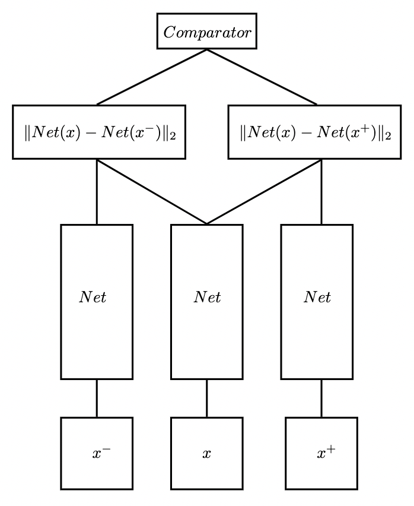

Siamese network
Siamese一词表示暹罗双胞胎，其意为连体人，源于十九世纪泰国的一对连体婴，中文名译为孪生、连体。
顾名思义，该网络表示两个或多个神经网络在一定程度是“连体”的，可以是网络结构相连，也可以是权重相连。如下图表示网络结构相连，左右两个网络可以是同一个，也可以是不同网络，比如一个是CNN，另一个是LSTM，如果左右两边权重不共享，此时叫伪孪生网络，如下图所示

如果网络之间的权重是共享的，这里的连体通过权重共享实现，称为孪生网络，如下图所示：
在实际实现时，为了方便可以使用同一个网络，如下pytorch代码所示：
class SiameseNetwork(nn.Module):
def __init__(self):
super(SiameseNetwork, self).__init__()
self.cnn1 = nn.Sequential(
nn.ReflectionPad2d(1),
nn.Conv2d(1, 4, kernel_size=3),
nn.ReLU(inplace=True),
nn.BatchNorm2d(4),
nn.ReflectionPad2d(1),
nn.Conv2d(4, 8, kernel_size=3),
nn.ReLU(inplace=True),
nn.BatchNorm2d(8),
nn.ReflectionPad2d(1),
nn.Conv2d(8, 8, kernel_size=3),
nn.ReLU(inplace=True),
nn.BatchNorm2d(8),
)
self.fc1 = nn.Sequential(
nn.Linear(8*100*100, 500),
nn.ReLU(inplace=True),
nn.Linear(500, 500),
nn.ReLU(inplace=True),
nn.Linear(500, 5))
def forward_once(self, x):
output = self.cnn1(x)
output = output.view(output.size()[0], -1)
output = self.fc1(output)
return output
def forward(self, input1, input2):
output1 = self.forward_once(input1)
output2 = self.forward_once(input2)
return output1, output2功能与用途
孪生网络针对两个输入input1和input2，分别进入神经网络network1和network2，通过最后的loss计算，可以评价两个network后向量的相似度，即两个input输入的相似度。
孪生网络由于权重共享，所以一定程度上限制了network1和network2的差异不能太大，所以通常用来处理两个输入差异不是非常大的问题， 比如，对比两张图片、两个句子、两个词汇的相似度。对于输入差异很大的相似度，比如图片与相应的文字描述，文章标题与文章段落的相似度，这时候就需要使用伪孪生网络。
所以针对不同的情况，主要需要选择的是网络结构和对应的损失函数。
损失函数
siamese network的输入是两个经过network表示后的向量，在新的向量空间中，只要能判断两个向量的距离，让同类的距离越小，异类的距离越大就能达到目的。所以这里的距离可以有很多，比如欧式距离，余弦距离，指数距离都可以。
原论文中结构如下
输入是 $X_{1}, X_{2},X^{‘}{2}$，其中 $X{1}$ 和 $X_{2}$ 属于同一类，$X_{1}$ 和 $X^{‘}{2}$ 非同一类，$G{w}$ 是network模型，其中 $W$ 为参数。
距离采用 $L_{2}$ 距离。
$$E_{w}(X_{1}, X_{2}) = ||G_{w}(X_{1}) - G_{w}(X_{2})||$$
损失函数采用Contrastive Loss
$$L(W) = \sum_{i = 1}^{P}l(W, (Y, X_{1}, X_{2})^{i})$$
$$l(W, (Y, X_{1}, X_{2})^{i}) = (1 - Y)l_{G}(E_{w}(X_{1}, X_{2})^{i}) + Yl_{I}(E_{w}(X_{1}, X_{2})^{i})$$
$Y$ 表示 $X_(1)$ 和 $X_{2}$ 是否是同一类，同类为0，不同类为1。$P$ 是输入的总样本数，$i$ 为当前样本的下标。
$l_{G}$ 表示为同类时的损失函数，$l_{I}$ 表示为同不同类时的损失函数。当为同类时，$l_{G}$ 尽可能小，当为不同类时，$l_{I}$ 尽可能大。
pytorch计算方式如下
class ContrastiveLoss(torch.nn.Module):
"""
Contrastive loss function.
"""
def __init__(self, margin=2.0):
super(ContrastiveLoss, self).__init__()
self.margin = margin
def forward(self, output1, output2, label):
euclidean_distance = F.pairwise_distance(output1, output2, keepdim = True)
loss_contrastive = torch.mean((1-label) * torch.pow(euclidean_distance, 2) +
(label) * torch.pow(torch.clamp(self.margin - euclidean_distance, min=0.0), 2))
return loss_contrastive三胞胎连体
常用的的孪生网络是基于双胞胎连体的，不过，基于三胞胎连体也是可以的，比如这篇论文就提出了Triplet network网络 Deep metric learning using Triplet network 。网络结构如下

输入是三个，一个正例两个负例，或一个负例两个正例。据作者实验，Triplet network在Mnist数据集上的表现是更优的。
实现
完整代码如下，参考：Facial-Similarity-with-Siamese-Networks-in-Pytorch
基础准备
%matplotlib inline
import torchvision
import torchvision.datasets as dset
import torchvision.transforms as transforms
from torch.utils.data import DataLoader,Dataset
import matplotlib.pyplot as plt
import torchvision.utils
import numpy as np
import random
from PIL import Image
import torch
from torch.autograd import Variable
import PIL.ImageOps
import torch.nn as nn
from torch import optim
import torch.nn.functional as F
def imshow(img,text=None,should_save=False):
npimg = img.numpy()
plt.axis("off")
if text:
plt.text(75, 8, text, style='italic',fontweight='bold',
bbox={'facecolor':'white', 'alpha':0.8, 'pad':10})
plt.imshow(np.transpose(npimg, (1, 2, 0)))
plt.show()
def show_plot(iteration,loss):
plt.plot(iteration,loss)
plt.show()
class Config():
training_dir = "/content/siamese_model/training"
testing_dir = "/content/siamese_model/testing/"
train_batch_size = 64
train_number_epochs = 100读取数据
class SiameseNetworkDataset(Dataset):
def __init__(self,imageFolderDataset,transform=None,should_invert=True):
self.imageFolderDataset = imageFolderDataset
self.transform = transform
self.should_invert = should_invert
def __getitem__(self,index):
img0_tuple = random.choice(self.imageFolderDataset.imgs)
#we need to make sure approx 50% of images are in the same class
should_get_same_class = random.randint(0,1)
if should_get_same_class:
while True:
#keep looping till the same class image is found
img1_tuple = random.choice(self.imageFolderDataset.imgs)
if img0_tuple[1]==img1_tuple[1]:
break
else:
while True:
#keep looping till a different class image is found
img1_tuple = random.choice(self.imageFolderDataset.imgs)
if img0_tuple[1] !=img1_tuple[1]:
break
img0 = Image.open(img0_tuple[0])
img1 = Image.open(img1_tuple[0])
img0 = img0.convert("L")
img1 = img1.convert("L")
if self.should_invert:
img0 = PIL.ImageOps.invert(img0)
img1 = PIL.ImageOps.invert(img1)
if self.transform is not None:
img0 = self.transform(img0)
img1 = self.transform(img1)
return img0, img1 , torch.from_numpy(np.array([int(img1_tuple[1]!=img0_tuple[1])],dtype=np.float32))
def __len__(self):
return len(self.imageFolderDataset.imgs)
folder_dataset = dset.ImageFolder(root=Config.training_dir)
siamese_dataset = SiameseNetworkDataset(imageFolderDataset=folder_dataset,
transform=transforms.Compose([transforms.Resize((100,100)),
transforms.ToTensor()
])
,should_invert=False)测试数据
vis_dataloader = DataLoader(siamese_dataset,
shuffle=True,
num_workers=8,
batch_size=8)
dataiter = iter(vis_dataloader)
example_batch = next(dataiter)
concatenated = torch.cat((example_batch[0],example_batch[1]),0)
imshow(torchvision.utils.make_grid(concatenated))
print(example_batch[2].numpy())网络结构
class SiameseNetwork(nn.Module):
def __init__(self):
super(SiameseNetwork, self).__init__()
self.cnn1 = nn.Sequential(
nn.ReflectionPad2d(1),
nn.Conv2d(1, 4, kernel_size=3),
nn.ReLU(inplace=True),
nn.BatchNorm2d(4),
nn.ReflectionPad2d(1),
nn.Conv2d(4, 8, kernel_size=3),
nn.ReLU(inplace=True),
nn.BatchNorm2d(8),
nn.ReflectionPad2d(1),
nn.Conv2d(8, 8, kernel_size=3),
nn.ReLU(inplace=True),
nn.BatchNorm2d(8),
)
self.fc1 = nn.Sequential(
nn.Linear(8*100*100, 500),
nn.ReLU(inplace=True),
nn.Linear(500, 500),
nn.ReLU(inplace=True),
nn.Linear(500, 5))
def forward_once(self, x):
output = self.cnn1(x)
output = output.view(output.size()[0], -1)
output = self.fc1(output)
return output
def forward(self, input1, input2):
output1 = self.forward_once(input1)
output2 = self.forward_once(input2)
return output1, output2损失函数
class ContrastiveLoss(torch.nn.Module):
"""
Contrastive loss function.
Based on: http://yann.lecun.com/exdb/publis/pdf/hadsell-chopra-lecun-06.pdf
"""
def __init__(self, margin=2.0):
super(ContrastiveLoss, self).__init__()
self.margin = margin
def forward(self, output1, output2, label):
euclidean_distance = F.pairwise_distance(output1, output2, keepdim = True)
loss_contrastive = torch.mean((1-label) * torch.pow(euclidean_distance, 2) +
(label) * torch.pow(torch.clamp(self.margin - euclidean_distance, min=0.0), 2))
return loss_contrastive训练
train_dataloader = DataLoader(siamese_dataset,
shuffle=True,
num_workers=8,
batch_size=Config.train_batch_size)
net = SiameseNetwork().cuda()
criterion = ContrastiveLoss()
optimizer = optim.Adam(net.parameters(),lr = 0.0005)
counter = []
loss_history = []
iteration_number= 0
base_loss = 999
for epoch in range(0,Config.train_number_epochs):
net.train()
for i, data in enumerate(train_dataloader,0):
img0, img1 , label = data
img0, img1 , label = img0.cuda(), img1.cuda() , label.cuda()
optimizer.zero_grad()
output1,output2 = net(img0,img1)
loss_contrastive = criterion(output1,output2,label)
loss_contrastive.backward()
optimizer.step()
if i % 100 == 0 :
print("Epoch number {} Current loss {}".format(epoch,loss_contrastive.item()))
iteration_number +=10
counter.append(iteration_number)
loss_history.append(loss_contrastive.item())
if loss_contrastive.item() < base_loss:
torch.save(net.state_dict(), '/content/drive/img_siamese/siamese_model/model/siamese_model.ckpt',
_use_new_zipfile_serialization=False) # 本版本是1.7，在低版本上加载需要_use_new_zipfile_serialization=False
base_loss = loss_contrastive.item()
torch.save(net.state_dict(), '/content/drive/img_siamese/siamese_model/model/siamese_model_final.ckpt',
_use_new_zipfile_serialization=False)
show_plot(counter,loss_history)预测
folder_dataset_test = dset.ImageFolder(root=Config.testing_dir)
siamese_dataset = SiameseNetworkDataset(imageFolderDataset=folder_dataset_test,
transform=transforms.Compose([transforms.Resize((100,100)),
transforms.ToTensor()
])
,should_invert=False)
test_dataloader = DataLoader(siamese_dataset,num_workers=6,batch_size=1,shuffle=True)
dataiter = iter(test_dataloader)
x0,_,_ = next(dataiter)
for i in range(6):
_,x1,label2 = next(dataiter)
concatenated = torch.cat((x0,x1),0)
output1,output2 = net(Variable(x0).cuda(),Variable(x1).cuda())
euclidean_distance = F.pairwise_distance(output1, output2)
imshow(torchvision.utils.make_grid(concatenated),'Dissimilarity: {:.4f}'.format(euclidean_distance.item()))reference
Siamese Network原论文地址 Learninga SimilarityMetricDiscriminatively, withApplicationtoFaceVerification
Pytorch实现 Facial-Similarity-with-Siamese-Networks-in-Pytorch
完～